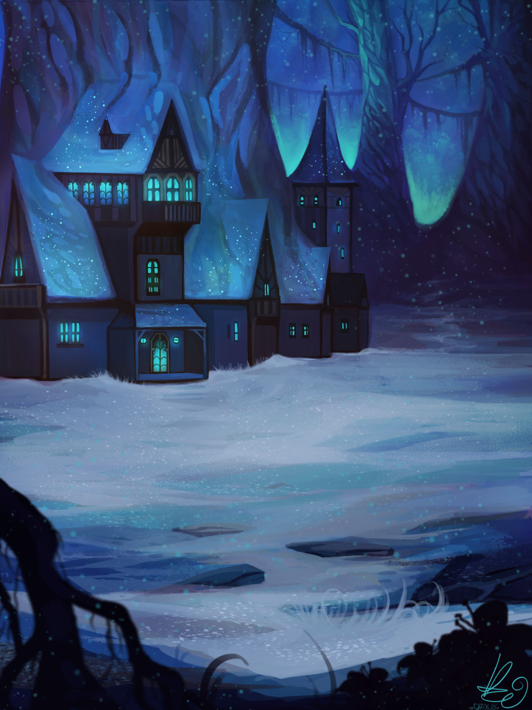

About me
My name is Eszter Kránicz and I'm currently a freshman at the University of Technology and Economics of Budapest.
Digital art is a huge hobby of mine, since I've been doing it for more than seven years. Despite being a self-taught artist, I have been commissioned by multiple people and even made illustrations for a browser game as well.My working tools include Photoshop, Paint Tool Sai and a Wacom Intuos Pro drawing tablet.